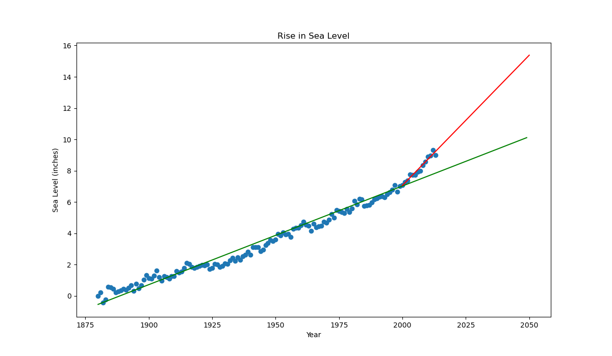
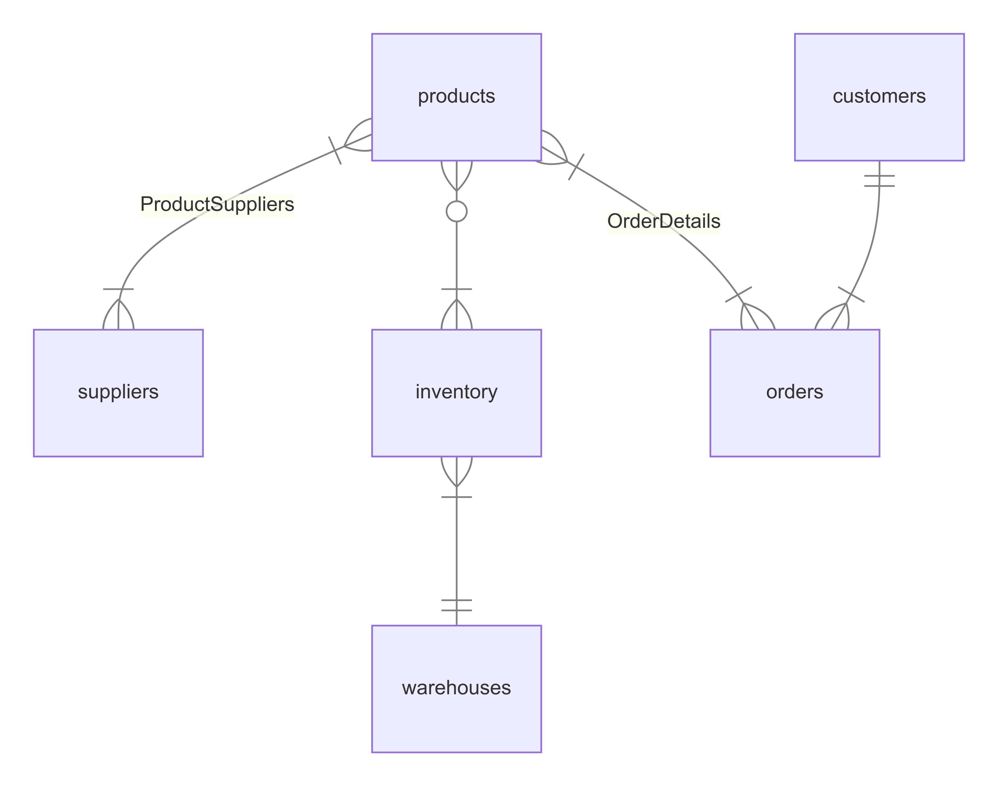
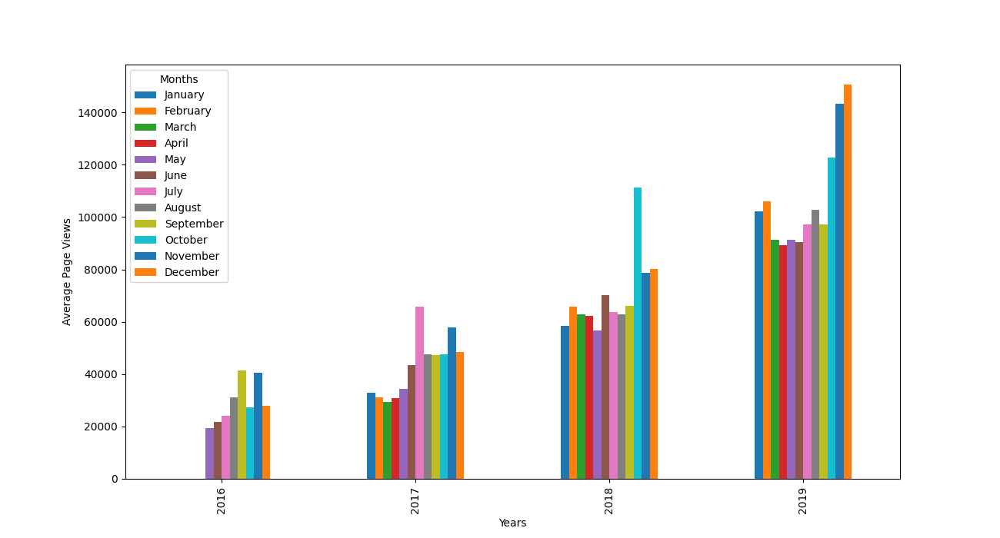
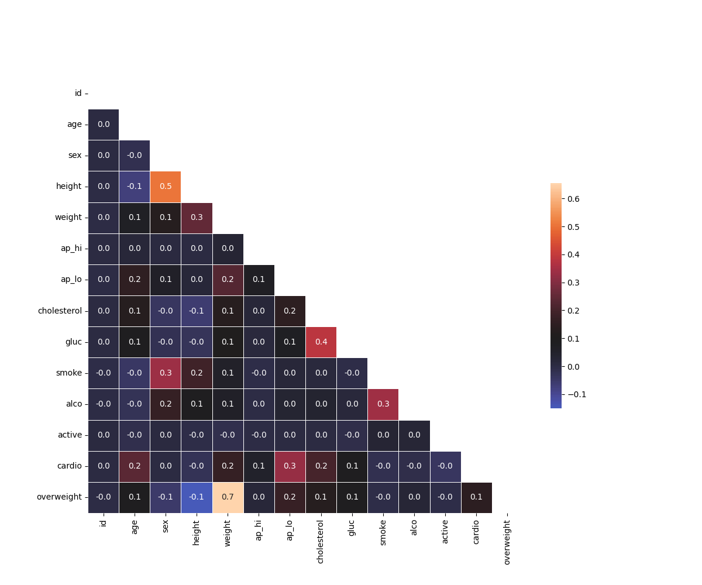
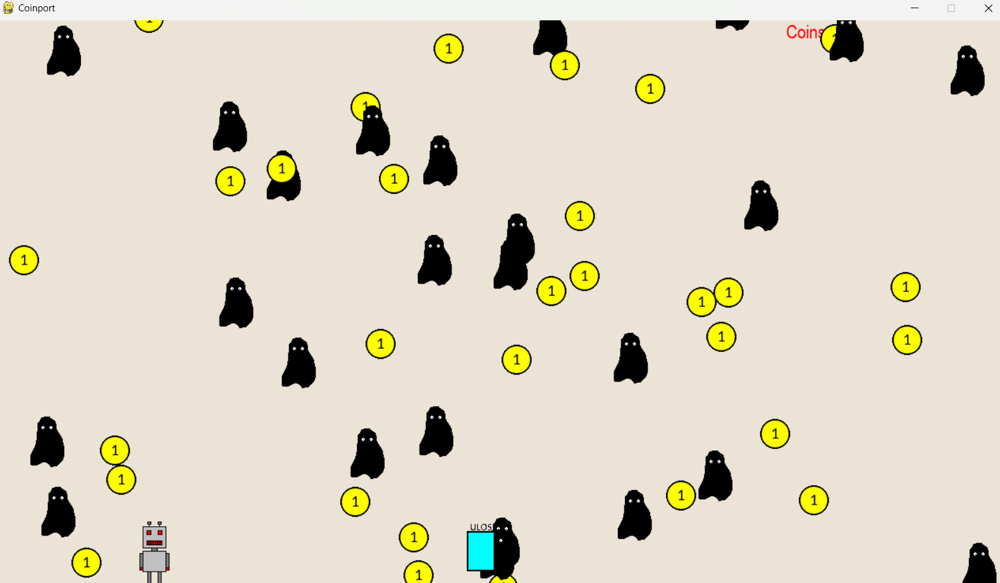

The Sea Level Predictor project aims to analyze global average sea level changes since 1880 and
predict future sea level changes through the year 2050. Using a dataset of historical sea level
measurements, we employ linear regression to model sea level rise and visualize both historical
data and future predictions.


The primary purpose of this database management system is to track and manage inventory levels, orders, sales, and deliveries. It aims to optimize stock levels, reduce holding costs, prevent stockouts or overstock situations, and improve overall operational efficiency for resource allocation.

The Time Series Visualizer project is designed to visualize time series data using line charts, bar charts, and box plots. This project utilizes Pandas, Matplotlib, and Seaborn to visualize the number of page views each day on the freeCodeCamp.org forum from 2016-05-09 to 2019-12-03. The visualizations help to understand patterns in visits and identify yearly and monthly growth trends.

This project aims to visualize and analyze medical examination data using Python's powerful data science libraries: Matplotlib, Seaborn, and Pandas. By leveraging these tools, we can gain valuable insights into the dataset and potentially identify trends or patterns.

Used Object oriented programming concept (OOP) and created a game with the help of Pygame library
of Python.
Implemented 3 different levels (easy, medium, hard) by 2X the respawning frequency of monster. In this game, the player moves horizontally to collect coins and avoid falling monsters. If the player touches a monster, the game is over!